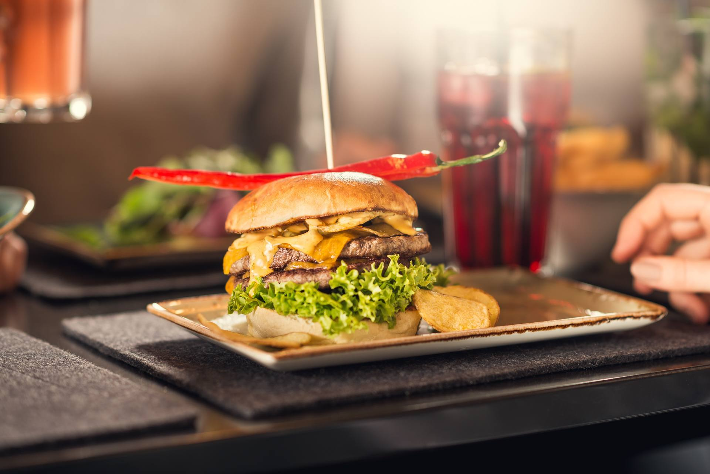
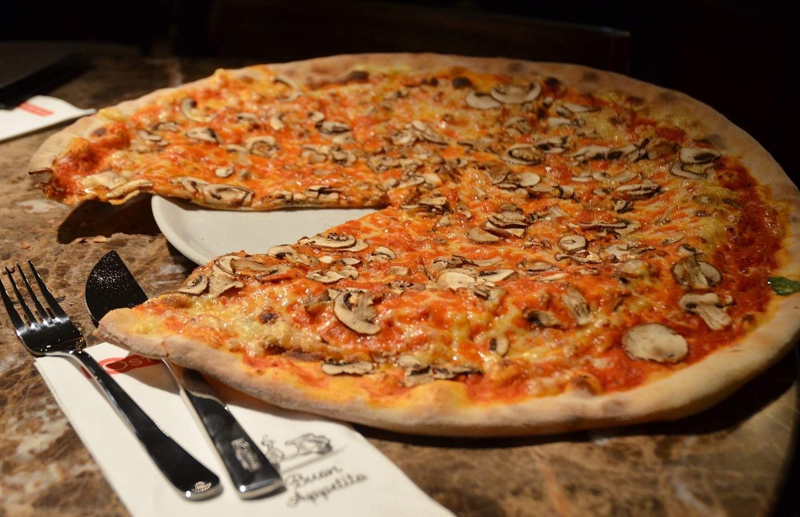
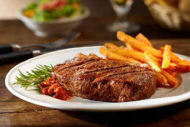

Angefangen habe ich aber schon als Werkstudentin am 01.09.2017 in derselben Abteilung Belegwesen. Seit März 2018 bin ich bei MediaMarktSaturn Technology als Testerin tätig. Nach dem Besuch des Bootcamps LeWagon werde ich endlich Entwicklerin :)
Mehr über mich!
|  |
Peter Pane, MünchenPeter Pane ist mehr als ein Burgergrill. Mehr als eine Bar. Es ist das Zusammenspiel aus Leidenschaft und Qualität. So bleibt unser tagtäglicher Anspruch, beste, regionale Zutaten mit einem Lächeln zu servieren. Es ist das junggebliebene Herz aus Tradition mit dem wir unseren Traum leben – Dich immer aufs Neue begeistern zu wollen und Dir besondere Momente zu schenken. Ob durch unnachahmliche Burger, frische Salate oder spritzige Cocktails: Peter Pane ist das „Traumland“ mit Qualitätsversprechen.
|
|  |
L'Osteria, IngolstadtIn der L’Osteria geht die Türe auf und schon fühlt man sich wie in einer typisch italienischen Osteria: Hier kommen Menschen – Familien, Freunde, Pärchen, Jung und Alt – zusammen, um gut zu essen. Es ist ein bisschen laut, lebhaft und über allem schwebt der köstliche Duft der echten italienischen Küche. Ein offener, herzlicher Ort, an dem man so sein darf, wie man ist und sich wie zu Hause fühlt.
|
|  |
Maredo, MünchenMAREDO - das ist Leidenschaft für beste Steaks, erstklassige Küche und genussvolles Miteinander.
Unsere Gäste erwarten das ganze Paket und unsere Teams in den MAREDO Restaurants stellen den Genuss durch freundlichen und kompetenten Service sicher. So kommt die beste Fleischqualität im individuellen Zuschnitt perfekt gegrillt auf Ihren Teller, begleitet von knackig-frischen Beilagen und aromatischen Dips und Saucen. Dafür setzen wir uns ein – gerne und jeden Tag aufs Neue.
|
Diese Seite wurde während des FullStack-Programms @LeWagon codiert. Das war wahrscheinlich die beste Erfahrung meines ganzen Lebens.